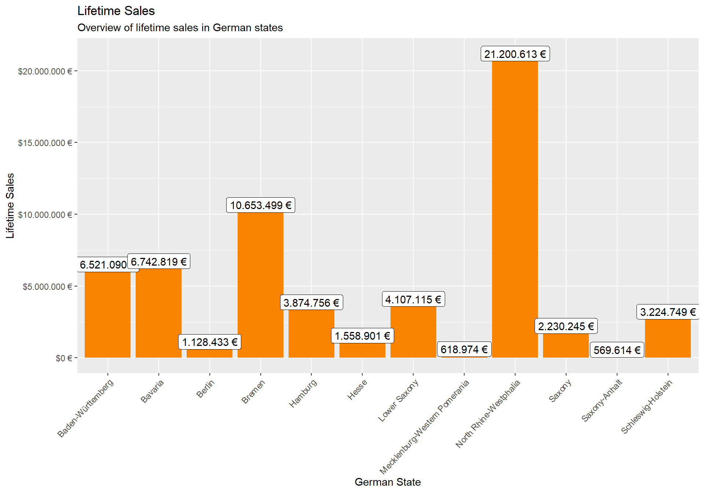
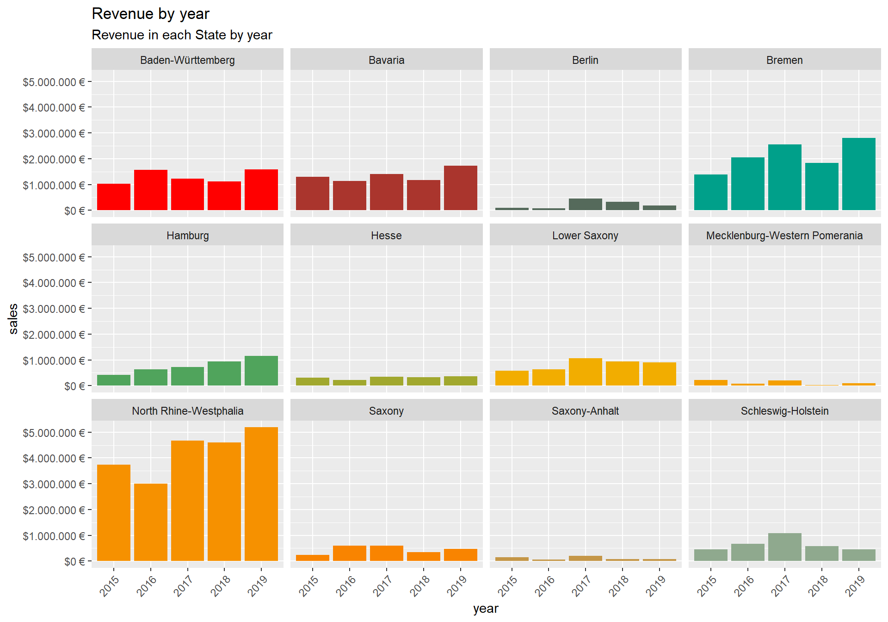

Last compiled: 2022-05-11
2.Analyze the sales by location and year (facet_wrap). Because there are states with bike stores, you should get 12 plots.
library(tidyverse)
library(jsonlite)
library(xml2)
library(readxl)
library(httr)
library(rvest)
library(tidyquant)
library(broom)
library(umap)
library(DT)
library(ggrepel)
library(lubridate)
library(wesanderson)
library(ggplot2)bikes_tbl <- read_excel(path = "C:/Users/Muhammad Affan Qamar/Documents/GitHub/bdsc-affan1947/00_data/01_bike_sales/01_raw_data/bikes.xlsx")
orderlines_tbl <- read_excel(path = "C:/Users/Muhammad Affan Qamar/Documents/GitHub/bdsc-affan1947/00_data/01_bike_sales/01_raw_data/orderlines.xlsx")
bikeshops_tbl <- read_excel(path = "C:/Users/Muhammad Affan Qamar/Documents/GitHub/bdsc-affan1947/00_data/01_bike_sales/01_raw_data/bikeshops.xlsx" )orderlines_tbl## # A tibble: 15,644 × 7
## ...1 order.id order.line order.date customer.id product.id quantity
## <chr> <dbl> <dbl> <dttm> <dbl> <dbl> <dbl>
## 1 1 1 1 2015-01-07 00:00:00 2 2681 1
## 2 2 1 2 2015-01-07 00:00:00 2 2411 1
## 3 3 2 1 2015-01-10 00:00:00 10 2629 1
## 4 4 2 2 2015-01-10 00:00:00 10 2137 1
## 5 5 3 1 2015-01-10 00:00:00 6 2367 1
## 6 6 3 2 2015-01-10 00:00:00 6 1973 1
## 7 7 3 3 2015-01-10 00:00:00 6 2422 1
## 8 8 3 4 2015-01-10 00:00:00 6 2655 1
## 9 9 3 5 2015-01-10 00:00:00 6 2247 1
## 10 10 4 1 2015-01-11 00:00:00 22 2408 1
## # … with 15,634 more rowsbikes_tbl## # A tibble: 231 × 9
## bike.id model model.year frame.material weight price category gender url
## <dbl> <chr> <dbl> <chr> <dbl> <dbl> <chr> <chr> <chr>
## 1 2875 Aeroad … 2020 carbon 7.6 4579 Road - … unisex http…
## 2 2873 Aeroad … 2020 carbon 7.27 6919 Road - … unisex http…
## 3 2874 Aeroad … 2020 carbon 7.1 6429 Road - … unisex http…
## 4 2876 Aeroad … 2020 carbon 7.73 5069 Road - … unisex http…
## 5 2877 Aeroad … 2020 carbon 7.83 3609 Road - … unisex http…
## 6 2225 Aeroad … 2019 carbon 6.8 6139 Road - … unisex http…
## 7 2091 Aeroad … 2019 carbon 6.8 5359 Road - … unisex http…
## 8 2086 Aeroad … 2021 carbon 7.6 2629 Road - … unisex http…
## 9 2088 Aeroad … 2020 carbon 7.3 3699 Road - … unisex http…
## 10 2120 Aeroad … 2020 carbon 7.2 3219 Road - … female http…
## # … with 221 more rowsIf the data has no common column name, you can provide each column name in the “by” argument. For example, by = c(“a” = “b”) will match x.a to y.b. The order of the columns has to match the order of the tibbles).
bike_orderlines_joined <- orderlines_tbl %>%
left_join(bikes_tbl, by = c("product.id" = "bike.id")) %>%
left_join(bikeshops_tbl, by = c("customer.id" = "bikeshop.id"))bike_orderlines_wrangled <- bike_orderlines_joined %>%
# Split up location data for Part 1
separate(col = location,
into = c("city", "state"),
sep = ", ") %>%
# Split up date data for Part 2
separate(col = order.date,
into = c("year", "month", "day"),
sep = "-") %>%
# Calculate and add total price data
mutate(total.price = price * quantity)Analyze the sales by location (state) with a bar plot. Since state and city are multiple features (variables), they should be split. Which state has the highest revenue? Replace your bike_orderlines_wrangled object with the newly wrangled object (with the columns state and city).
#Create frame with price data by State
sales_by_state <- bike_orderlines_wrangled %>%
# Select relevant data (state and total price)
select(state,total.price) %>%
# Sum all the prices for each state
group_by(state) %>%
summarize(sales=sum(total.price)) %>%
# draw labels for bar graph
mutate(sales_text = scales::dollar(sales, big.mark = ".",
decimal.mark = ",",
prefix = "",
suffix = " €"))
# making it presentable
sales_by_state %>% ggplot(aes(x=state, y=sales)) +
geom_col(fill = wes_palette("Darjeeling1", 4)[4]) +
geom_label(aes(label = sales_text)) +
scale_y_continuous(labels = scales::dollar_format(big.mark = ".", suffix = " €")) +
labs(
title = "Lifetime Sales",
subtitle = "Overview of lifetime sales in German states") +
xlab("German State") + ylab("Lifetime Sales") +
theme(axis.text.x = element_text(angle = 47, hjust = 1))
Analyze the sales by location and year (facet_wrap). Because there are 12 states with bike stores, you should get 12 plots.
# Create frame with price data by states and by year
sales_by_state_by_year <- bike_orderlines_wrangled %>%
# Select relevant data (state, year, total price)
select(year, state, total.price) %>%
# Group by year and sum the order totals for each state
group_by(year, state) %>%
summarize(sales=sum(total.price)) %>%
# Making it presentable
mutate(sales_text = scales::dollar(sales, big.mark = ".",
decimal.mark = ",",
prefix = "",
suffix = " €"))
sales_by_state_by_year %>% ggplot(aes(x = year, y = sales, fill = state)) +
geom_col() +
facet_wrap(~ state) +
scale_y_continuous(labels = scales::dollar_format(big.mark = ".",
suffix = " €")) +
labs(
title = "Revenue by year",
subtitle = "Revenue in each State by year") +
scale_fill_manual(values = wes_palette("Darjeeling1", 13,
type = "continuous")) +
theme(legend.position = "none",
axis.text.x = element_text(angle = 47, hjust = 1))
Done !!